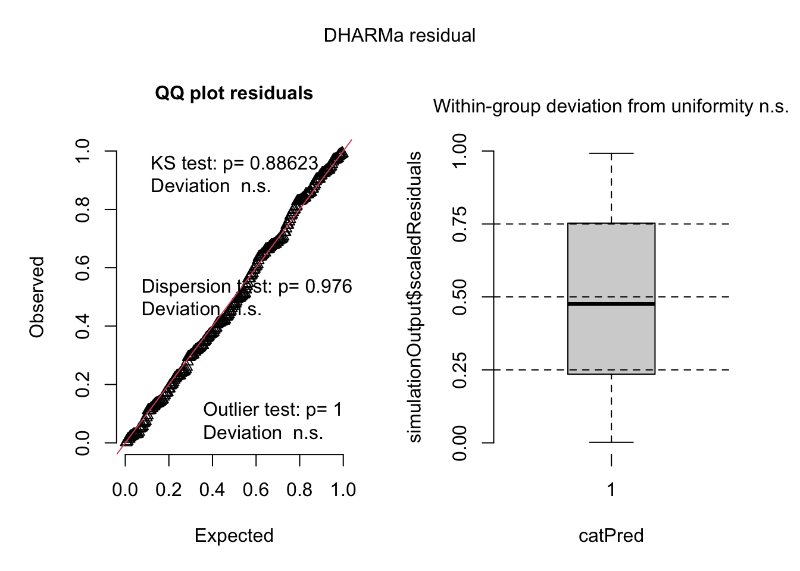
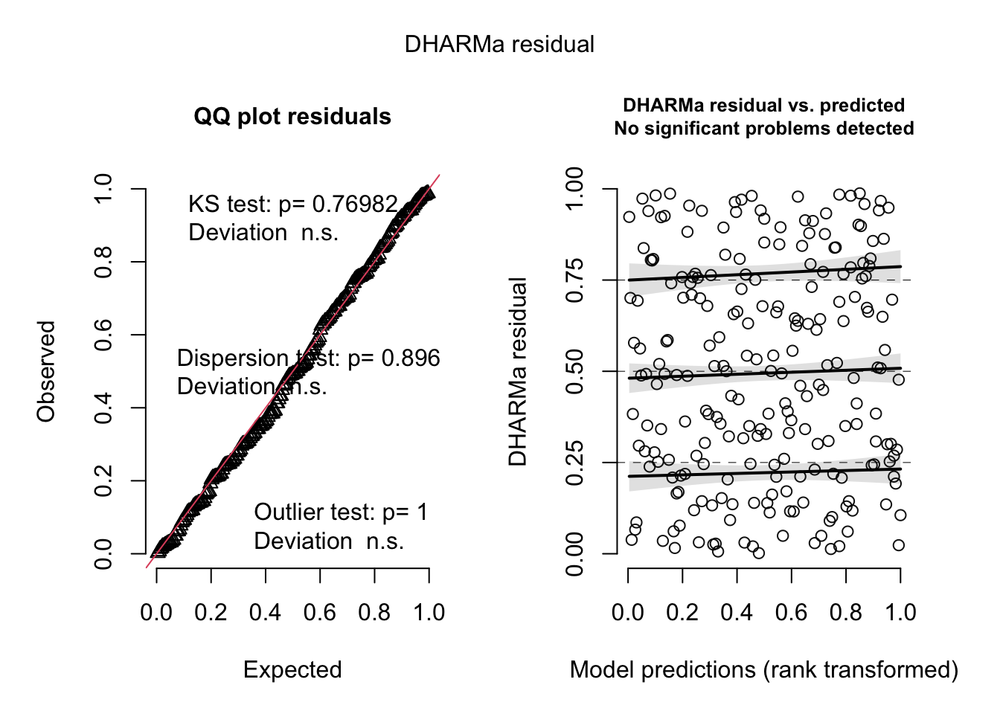
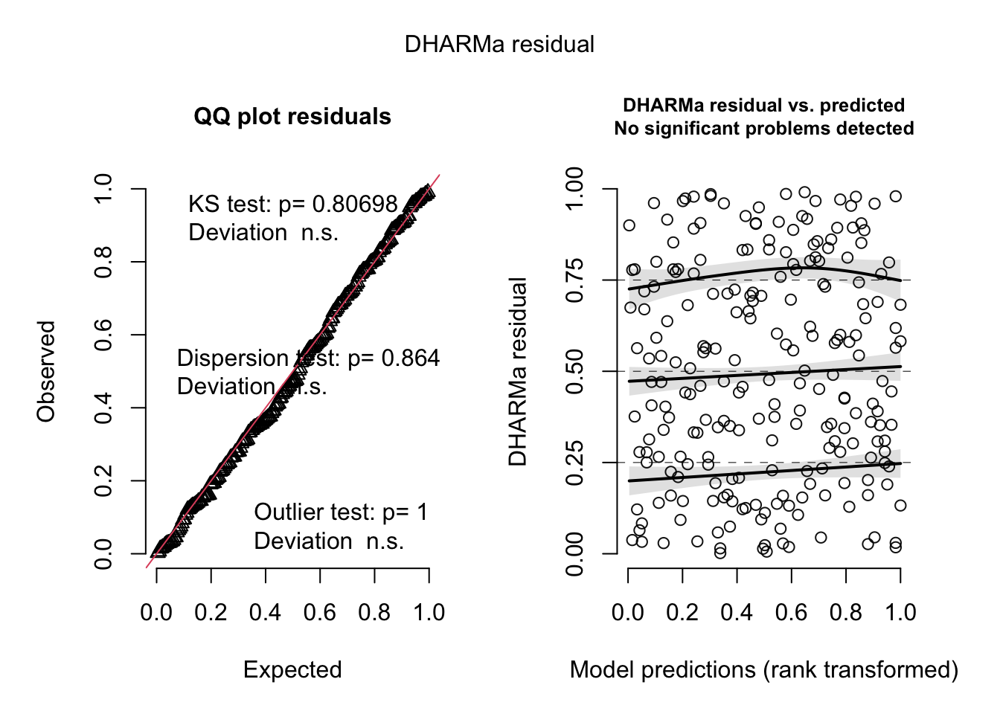
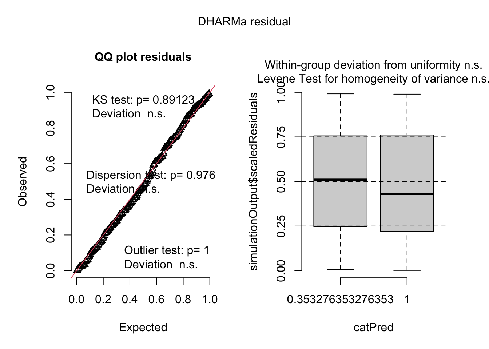
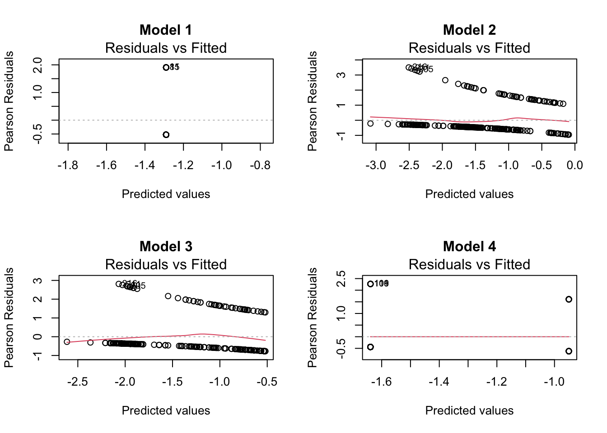

Link to GitHub repo: https://github.com/eliana427/ENVS-193DS_spring-2025_final.git
Problem 1. Research writing
a. Transparent statistical methods
In part one, my co-worker likely did a Pearson correlation (if each variable is normally distributed), but if they’re not normally distributed than the test was likely a Spearman rank correlation. In part 2, my co-worker likely did a one way ANOVA test (for normally distributed variable and sources have equal variances) or a Kurskal-Wallis test (data is not normally distributed).
b. More information needed
The effect size (in this case, \(\eta^2\)) would be helpful because it gives information about how big the difference is between groups, specifically how much the type of source impacts the variation of average nitrogen load. A post hoc Tukey’s HSD test would be helpful because it provides information about which groups in particular differ in nitrogen load by comparing the pairs of sources directly.
c. Suggestions for rewriting
We found a large difference (\(\eta^2\) = effect size) in average load of nitrogen (kg/year) between tested sources (urban land, atmospheric deposition, fertilizer, waste water treatment, and grasslands) (one-way ANOVA, F(4, df within groups) = F value, p = 0.03, \(\alpha\) = significance level)). A post hoc comparison using Tukey’s HSD indicated that there were differences in the mean load of nitrogen between two of the of sources (amount kg/year less, x% CI: [lower bound, upper bound]) and another two of the of sources (amount less kg/year, x% CI: [lower bound, upper bound]).
Problem 2. Data visualization
a. Cleaning and summarizing
sst_clean <- sst |># store sst as new object called sst_cleanclean_names() # make all names lowercase, and if there were spaces then change to underscoressst_clean <- sst_clean |># assigns sst_clean to itself to use in next functionsmutate(date =as.Date(date), # make sure that R reads this column as a date that can be separatedmonth =month(date, label =TRUE, abbr =FALSE), # separate out months from date columnyear_extracted =year(date) # extract the year from the data set ) |>filter(year_extracted >=2018) |># filter the data set to only include dates 2018 and latermutate(year =factor(year_extracted), # read year as a factordate =NULL, # remove date column from displayed data in consolesite =NULL, # remove site column from displayed data in consolelatitude =NULL, # remove latitude column from displayed data in consolelongitude =NULL# remove longitude column from displayed data in console ) |>group_by(year, month) |># group by year and monthsummarize(mean_monthly_sst =mean(temp, na.rm =TRUE)) |># calculate mean temperature per groupungroup() |># removes groupings back to original data frame# rename all months in month column to abbreviations mutate(month =case_when( month =="January"~"Jan", month =="February"~"Feb", month =="March"~"Mar", month =="April"~"Apr", month =="May"~"May", month =="June"~"Jun", month =="July"~"Jul", month =="August"~"Aug", month =="September"~"Sep", month =="October"~"Oct", month =="November"~"Nov", month =="December"~"Dec")) |>mutate(month =factor(month, levels =c("Jan", "Feb", "Mar", "Apr", "May", "Jun", "Jul", "Aug", "Sep", "Oct", "Nov", "Dec"),ordered =TRUE)) # sort months in order when they appear on graphslice_sample(sst_clean, n =5) # display five random rows of the data set
# A tibble: 5 × 3
year month mean_monthly_sst
<fct> <ord> <dbl>
1 2022 Apr 13.3
2 2020 Feb 14.7
3 2019 Feb 14.1
4 2018 Feb 14.3
5 2018 Jun 15.5
sst_plot <- sst_clean # creating new object for plotggplot(data = sst_clean, # use data from sst_cleanaes(x = month, # x axis is monthy = mean_monthly_sst, # y axis is mean_monthly_sstcolor = year, # color will be based on yeargroup = year)) +# data will be grouped by year+ geom_line() +# create a line plotscale_color_manual(values=c("#2E004F", "#4B0082", "#6A0DAD", "#8A2BE2", "#A24AC3", "#BF65D9")) +# colors will be a gradient with 2018 being the darkest and 2023 being the lightestgeom_point(size =1.1) +# add points to the lines of size 1.1labs(x ="Month", # rename the x axisy ="Mean monthly sea surface temperature (°C)", # rename the y axiscolor ="Year") +# rename the legend which is based on colortheme(panel.grid =element_blank(), # remove the grid linespanel.background =element_blank(), # make panel background blankpanel.border =element_rect(color ="grey24", fill =NA, linewidth =0.5), # add border to plot of width 0.5 but don't fill it inaxis.ticks.length.x =unit (1, "mm"), # make axis ticks on x axis 1 mmaxis.ticks.length.y =unit (1, "mm"), # make axis ticks on y axis 1 mmlegend.position ="inside", # place legend inside of plotlegend.position.inside =c(0.15, 0.7)) # legend will be positioned at these coordinates
Problem 3. Data analysis
a. Response variable
The 0’s and 1’s represent if the nest box is occupied or not by a particular species; a 0 means means not occupied by these species, and a 1 means occupied by this species. The “empty” column with a 1 means the box was empty, and with a 0 means it had some species living in it.
b. Purpose of study
Swift Parrots are far more selective about where they nest compared to Tree Martins and Common Starlings, so the nest boxes are designed for them but are at risk of occupancy of these competitors. Swift Parrots are subject to a higher risk of extinction because of human impacts on forests, more so than Tree Martins and Common Starlings because they are less selective than Swift Parrots.
c. Difference in “seasons”
The authors of the study explain that the “seasons” are the years 2016 and 2019, which were important to test how effective the use of permanent boxes are. In 2016, the researchers put new nest boxes at a breeding sites of Swift Parrots, where a mast tree flowering event had occurred and the boxes remained in place when in 2019 another mast tree flowering event occurred.
d. Table of models
Model number
Season
Distance to Forest Edge
Model Description
1
no predictors (null model)
2
X
X
all predictors (saturated model)
3
X
distance to forest edge
4
X
season
e. Run the models
# model 1, null model: where any species is presentmodel1 <-glm(sp ~1, # formula for null modeldata = nest_boxes_clean, # use nest_boxes_clean data framefamily ="binomial") # this is a binomial distribution# model 2, saturated model: where edge distance and season impact whether any species is presentmodel2 <-glm(sp ~ edge_distance + season, # formula for saturated modeldata = nest_boxes_clean, # use nest_boxes_clean data framefamily ="binomial") # this is a binomial distribution# model 3, one predictor: where edge distance impacts if swift parrots are presentmodel3 <-glm(sp ~ edge_distance, # formula for using edge_distance as only predictordata = nest_boxes_clean, # use nest_boxes_clean data framefamily ="binomial") # this is a binomial distribution# model 4, other predictor: where season impacts if swift parrots are presentmodel4 <-glm(sp ~ season, # formula for using season as only predictordata = nest_boxes_clean, # use nest_boxes_clean data framefamily ="binomial") # this is a binomial distribution
f. Check the diagnostics
# show model 1 on simulated residual plotplot(simulateResiduals(model1))

# show model 2 on simulated residual plotplot(simulateResiduals(model2))

# show model 3 on simulated residual plotplot(simulateResiduals(model3))

# show model 4 on simulated residual plotplot(simulateResiduals(model4))

g. Select the best model
# run AIC comparison to find out which model is best to represent dataAICc(model1, model2, model3, model4) |>arrange(AICc)
The best model as determined by Akaike’s Information Criterion (AIC) is the one that compares if Swift Parrots are present (response variable) depending on distance to forest edge and season (saturated model, all predictor variables included).
h. Visualize the model predictions
# model predictions for each modelpar(mfrow =c(2,2)) # setting parameters, divide the area into a 2x2 gridplot(model1, which =1, main ="Model 1") # create diagnostic plot for model 1 and title the plot "Model 1"plot(model2, which =1, main ="Model 2") # create diagnostic plot for model 2 and title the plot "Model 2"plot(model3, which =1, main ="Model 3") # create diagnostic plot for model 3 and title the plot "Model 3"plot(model4, which =1, main ="Model 4") # create diagnostic plot for model 4 and title the plot "Model 4"

mod_preds <-ggpredict(model2, # creating a new object for the predictions of values based on model2terms =c("edge_distance [7:1072] by = 1", "season")) # the prediction will be of a distance from 7 to 1072 meters by 1m increments, and repeat again for seasonmod_preds_plot <-ggplot() +# create a new object for the plot using ggplotgeom_point(data = nest_boxes_clean, # use nest_boxes_clean data frame to add in real observationsaes(x = edge_distance, # x axis will be edge distancey = sp), # y axis will be presence of swift parrotssize =3, # size will be 3alpha =0.4, # level of see-through the points will becolor ="blue") +# make the points bluegeom_ribbon(data = mod_preds, # aes(x = x,ymin = conf.low,ymax = conf.high,fill = group),alpha =0.4) +# Prediction line from modelgeom_line(data = mod_preds,aes(x = x,y = predicted,color = group),linewidth =1.2) +# Manual color and fill scalescale_color_manual(values =c("2016"="orange", "2019"="purple")) +scale_fill_manual(values =c("2016"="orange", "2019"="purple")) +# Y-axis formattingscale_y_continuous(limits =c(0, 1),breaks =c(0, 1)) +# Theme adjustmentstheme(panel.grid =element_blank(),panel.background =element_blank(),panel.border =element_rect(color ="grey24", fill =NA, linewidth =0.5),axis.ticks.length.x =unit(1, "mm"),axis.ticks.length.y =unit(1, "mm") ) +# Axis labelslabs(x ="Edge Distance (m)",y ="Presence of Swift Parrots (yes/no)",color ="Season",fill ="Season" )mod_preds_plot
i. Write a caption for your figure
Figure 1. Swift Parrots tend to occupy more nest boxes that are closer to the forests for seasons 2016 and 2019, and occupied more next boxes in 2016. Data from ‘A case study of a critically endangered bird’ (Stojanovic, Dejan et al. (2021). Do nest boxes breed the target species or its competitors? A case study of a critically endangered bird [Dataset]. Dryad.). Points (blue) represent if Swift Parrots were present (yes = 1, no = 0) and how far they were from the forest edge (unit) (total n = 227). Colors and the shape around the lines represent the 95% confidence interval (orange: 2016, purple: 2019).
distance_to_edge predicted std.error conf.low
Min. : 0 Min. :0.06139 Min. :0.2262 Min. :0.02700
1st Qu.:225 1st Qu.:0.13350 1st Qu.:0.2515 1st Qu.:0.07637
Median :450 Median :0.19745 Median :0.2771 Median :0.12834
Mean :450 Mean :0.21719 Mean :0.2904 Mean :0.14285
3rd Qu.:675 3rd Qu.:0.28207 3rd Qu.:0.3181 3rd Qu.:0.18791
Max. :900 Max. :0.48064 Max. :0.4374 Max. :0.32674
conf.high season
Min. :0.1336 2016:901
1st Qu.:0.2179 2019:901
Median :0.2934
Mean :0.3162
3rd Qu.:0.3956
Max. :0.6383
As the distance from the forest edge increases (m), the predicted probability of Swift Parrots occupying nest boxes decreased (Figure 1), showing that there is a negative relationship between probability of occupancy and forest edge distance. At the edge of the forest (0 m), the predicted probability of nest box occupancy was 0.48 (95% CI: [0.33, 0.64], \(\alpha\) = 0.05) in 2016, and 0.30 (95% CI: [0.18, 0.44], \(\alpha\) = 0.05) in 2019, demonstrating how Swift Parrots are more likely to occupy nest boxes near the forest edge, particularly in 2016. At 900 m away from the edge of the forest, the predicted probability of nest box occupancy went down to 0.12 (95% CI: [0.06, 0.24], \(\alpha\) = 0.05) in 2016 and to 0.06 (95% CI: [0.03, 0.13], \(\alpha\) = 0.05), \(\alpha\) = 0.05) in 2019, showing again a lower occupancy of nest boxes that are farther from the forest edge for both seasons. We conclude that Swift Parrots favor nest boxes that are along the edge of the forest because of the decreasing probability of occupancy as the distance increased from the forest edge, which could be because of resource availability and nesting preferences. The permanent boxes (those that remained in 2019) may have been taken over by competitor species, the Common Starling and the Tree Martin, because of the significantly lower Swift Parrot occupancy.
Problem 4. Affective and exploratory visualizations
a. Comparing visualizations
My visualizations are different to each other in the way of their immediate visual contrast, where my affective visualization is creative and my exploratory visualization is very straight forward. My affective visualization involves more predictor variables (temperature, shoe type), instead just being on the phone.
My visualizations are similar because they both show the median, first quantile, third quartile, and maximum and minimum.
Because I had more data by the time I was working on homework 3, I have a lot more information in my affective visualization. I noticed between both that I tend to walk faster when I talk on the phone, and in my affective visualization type of shoe and temperature didn’t have that much of an impact on the time I took. My median for the time I take to walk to class (when I am on the phone) dropped on my affective visualization compared to the exploratory, and there was a much bigger range from 18-23 instead of 20-21. My range also expanded for when I was not on the phone from 15-23 instead of 16-19. The exploratory visualization, even though there are limited data points, clearly shows that it took me longer to walk to class when I was on the phone, whereas the affective visualization shows a less obvious trend.
I initially was only going to do one shoe and add on both sets of data in different colors, but my peer reviewers (Ellie and Tanveer) suggested that I do two different shoes. They also said it looked a little busy with the pattern of the shoe so I decided to just have a solid background. They said it would be beneficial and more informative to add more variables, so I added an icon for each data point that represented my shoe type, and it’s color represented the temperature that day. They agreed with what An suggested about incorporating the first and third quantiles in addition to the median, minimum, maximum. I did this by adding gaps in the shoe for each quantile (consistent with a clipart-esque design), and putting in dark lines for where the median, minimum, and maximum are.